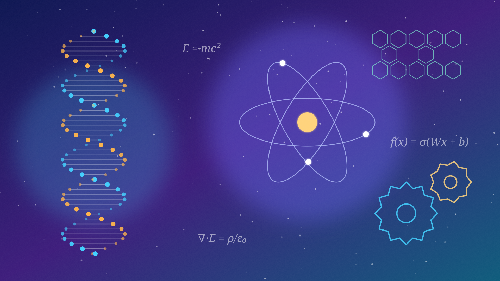
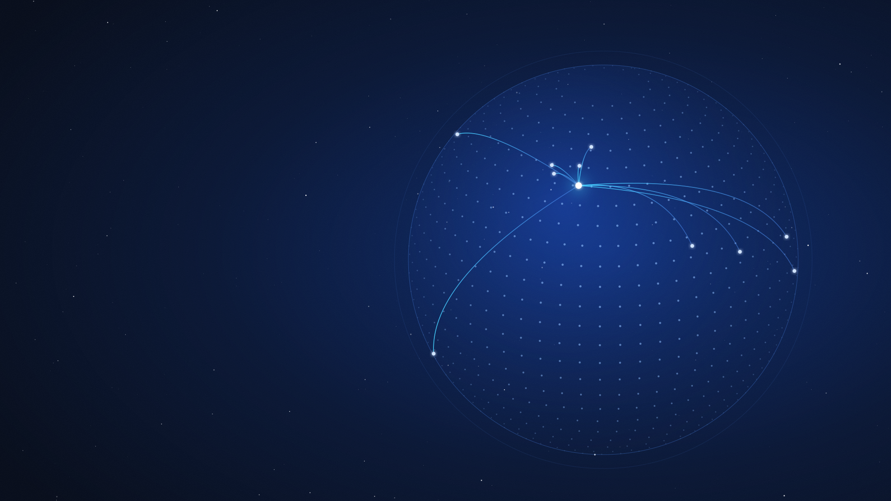

Plansวางแผน
Your goal, your target score or project, and a timetable that fits school life.
เป้าหมาย คะแนนหรือโครงงานที่อยากได้ และตารางเรียนที่เข้ากับชีวิตในโรงเรียน
Two tracks, one personal plan. AI · Coding · STEM · Research & Innovation — build apps, AI, robots and award-worthy research. Standardized Test & Admissions Prep — entrance exams, SAT, IELTS and more, with the maths and English behind them. Ages 10+, live on Zoom, onsite or hybrid.
2 แทร็ก 1 แผนส่วนตัว AI · โค้ด · STEM · วิจัยและนวัตกรรม สร้างแอป AI หุ่นยนต์ และงานวิจัยระดับประกวด ติวข้อสอบมาตรฐานและสอบเข้า สอบเข้า ม.1 / ม.4, SAT, IELTS และอื่น ๆ พร้อมคณิตและอังกฤษที่เป็นพื้นฐาน สำหรับอายุ 10 ปีขึ้นไป เรียนสดผ่าน Zoom ที่แล็บ หรือไฮบริด
Pick one, or mix both. Your Mentor puts them in the right order for you.
เลือกแทร็กเดียว หรือเรียนคู่กันก็ได้ เมนเทอร์จะจัดลำดับให้เหมาะกับคุณ
Code your first game, build an app, train an AI, wire a robot — then turn it into a project you can enter, show and publish.
เขียนเกมแรก สร้างแอป เทรน AI ต่อวงจรหุ่นยนต์ แล้วต่อยอดเป็นโครงงานที่ส่งประกวด โชว์ และตีพิมพ์ได้
Know your level, set a score target, follow a weekly plan, practise under real timing — for school entrance, international tests and university.
รู้ระดับตัวเอง ตั้งเป้าคะแนน เรียนตามแผนรายสัปดาห์ ฝึกจับเวลาเหมือนสอบจริง ทั้งสอบเข้าโรงเรียน ข้อสอบนานาชาติ และมหาวิทยาลัย
At DeepDistrict a Mentor is the person who plans with you, teaches you, builds projects alongside you and keeps your parents in the loop — one person, one plan, backed by our whole team.
ที่ DeepDistrict "เมนเทอร์" คือคนที่วางแผนกับคุณ สอนคุณ ลงมือทำโครงงานไปด้วยกัน และอัปเดตผู้ปกครองให้รู้ความคืบหน้า คนเดียวดูแลครบ บนแผนเดียว โดยมีทีมของเราสนับสนุนอยู่เบื้องหลัง
Your goal, your target score or project, and a timetable that fits school life.
เป้าหมาย คะแนนหรือโครงงานที่อยากได้ และตารางเรียนที่เข้ากับชีวิตในโรงเรียน
One to one or a tiny group, at your pace — not the textbook's.
ตัวต่อตัวหรือกลุ่มเล็กมาก ตามจังหวะของคุณ ไม่ใช่ตามหนังสือ
Real projects and real practice tests, with feedback every week.
ทำโครงงานจริงและฝึกข้อสอบจริง พร้อมคำแนะนำทุกสัปดาห์
Timetable on your phone calendar, clear schedule reports, a monthly update.
ตารางเรียนในปฏิทินมือถือ รายงานวันเวลาเรียนที่อ่านง่าย และอัปเดตทุกเดือน
Five steps, the same for every learner — what changes is the plan inside them.
5 ขั้นตอนที่เหมือนกันสำหรับผู้เรียนทุกคน สิ่งที่ต่างคือแผนที่ออกแบบให้แต่ละคน
Tell us where you are, what you love and where you want to go.
เล่าให้เราฟังว่าตอนนี้อยู่ตรงไหน ชอบอะไร และอยากไปถึงจุดไหน
A short assessment in the subjects that matter, so the plan starts from facts, not guesses.
ทำแบบประเมินสั้น ๆ ในวิชาที่เกี่ยวข้อง เพื่อให้แผนเริ่มจากข้อมูลจริง ไม่ใช่การคาดเดา
Your target, timeline, days and times, and your Mentor — agreed with the family.
เป้าหมาย ระยะเวลา วันเวลาเรียน และเมนเทอร์ของคุณ ตกลงร่วมกับครอบครัว
Weekly lessons and projects, with a Mentor check-in every month.
เรียนและทำโครงงานทุกสัปดาห์ และทบทวนแผนกับเมนเทอร์ทุกเดือน
A score, a project, a portfolio or a place — then we plan the next round together.
ได้คะแนน โครงงาน แฟ้มผลงาน หรือที่เรียนที่ต้องการ แล้ววางแผนรอบต่อไปด้วยกัน
Upper primary and lower secondary are when habits, curiosity and confidence form. A Mentor at this age helps a learner try things, find what they love and build skills early — with no deadline pressure.
ช่วงประถมปลายถึงมัธยมต้นคือช่วงที่นิสัยการเรียน ความอยากรู้ และความมั่นใจกำลังก่อตัว การมีเมนเทอร์ในวัยนี้ช่วยให้ผู้เรียนได้ลองสิ่งใหม่ ค้นพบสิ่งที่รัก และสร้างทักษะได้ตั้งแต่เนิ่น ๆ โดยไม่ต้องเร่งรีบตามกำหนดเวลา
Talk to a Mentorคุยกับเมนเทอร์Study habits, time planning, clear writing and confident speaking.
นิสัยการเรียน การวางแผนเวลา การเขียนให้ชัด และการพูดอย่างมั่นใจ
Coding, electronics and small science projects that turn curiosity into something to show.
เขียนโค้ด อิเล็กทรอนิกส์ และโครงงานวิทยาศาสตร์เล็ก ๆ ที่เปลี่ยนความอยากรู้ให้เป็นผลงาน
Gifted and special programmes for lower secondary, prepared step by step, not crammed.
เตรียมสอบห้องเรียนพิเศษระดับมัธยมต้นทีละขั้น ไม่ต้องอัดเนื้อหาช่วงท้าย
A timetable on your phone calendar, schedule reports and a monthly Mentor update.
ตารางเรียนในปฏิทินมือถือ รายงานวันเวลาเรียน และอัปเดตจากเมนเทอร์ทุกเดือน
Full test 54 questions · 2 modules × 32 minข้อสอบเต็ม 54 ข้อ · 2 โมดูล × 32 นาที
Reading 40 questions + Writing Task 1 & 2Reading 40 ข้อ + Writing Task 1 และ 2
English · 40 questions · 50 minภาษาอังกฤษ · 40 ข้อ · 50 นาที
English · reading & reasoning · 50 questions · 60 minภาษาอังกฤษ · เน้นการอ่านและคิด · 50 ข้อ · 60 นาที
English · 50 questions · 60 minภาษาอังกฤษ · 50 ข้อ · 60 นาที
Academic English · 50 questions · 60 minอังกฤษเชิงวิชาการ · 50 ข้อ · 60 นาที
Cloze, error & reading · 50 questions · 60 minCloze ข้อผิด และการอ่าน · 50 ข้อ · 60 นาที
80 questions · 90 min · official blueprint80 ข้อ · 90 นาที · ตามโครงสร้างจริง
Today's AI is a powerful tool: it answers questions, writes and recognises patterns. SI, Super Intelligence, is the next horizon: intelligence that reasons, discovers and creates beyond the best human minds, in almost every field.
AI ในวันนี้คือเครื่องมือที่ทรงพลัง ตอบคำถาม เขียน และจดจำรูปแบบได้ ส่วน SI หรือ Super Intelligence คือขอบฟ้าถัดไป คือความฉลาดที่ให้เหตุผล ค้นพบ และสร้างสรรค์ได้เหนือกว่ามนุษย์ที่เก่งที่สุด ในแทบทุกสาขา
Any intellect that greatly exceeds the cognitive performance of humans in virtually all domains of interest.สติปัญญาใด ๆ ที่เหนือกว่าความสามารถทางการคิดของมนุษย์อย่างมาก ในแทบทุกด้านที่เราให้ความสำคัญ
Seven capabilities, side by side. Toggle between today's AI and the SI goal.
เจ็ดความสามารถ เทียบกันแบบเห็นชัด สลับดูระหว่าง AI ในวันนี้กับเป้าหมาย SI
Every course is customised to your goals, level, interests and schedule, and keeps adapting as you grow.
ทุกหลักสูตรปรับให้ตรงกับเป้าหมาย ระดับ ความสนใจ และตารางเวลาของคุณ และปรับต่อเนื่องเมื่อคุณเติบโต
Choose per course, and switch when your life changes. Hardware labs run onsite or hybrid.
เลือกได้ในแต่ละรายวิชา และเปลี่ยนได้เมื่อชีวิตของคุณเปลี่ยน ส่วนแล็บฮาร์ดแวร์จัดที่แล็บหรือแบบไฮบริด
Start where you are. Each level unlocks the next, all the way to SI research.
เริ่มจากจุดที่คุณอยู่ แต่ละระดับปลดล็อกระดับถัดไป จนถึงงานวิจัยด้าน SI

The Innovation Lab adapts completely to what you care about. We help you find a topic, then mentor you through research, building and writing until you publish or compete.
แล็บนวัตกรรมปรับตามสิ่งที่คุณสนใจทั้งหมด เราช่วยคุณหาหัวข้อ แล้วดูแลตลอดการวิจัย การสร้างผลงาน และการเขียน จนถึงการตีพิมพ์หรือการแข่งขัน
Illustrative output from an edge-AI lab exercise (EDG310).ตัวอย่างผลลัพธ์จากแบบฝึกหัดแล็บ Edge AI (EDG310)
Strong Maths, Physics and English; real STEM and AI projects; the right tests for medicine, engineering, business or study abroad — taught as one plan.
คณิต ฟิสิกส์ และอังกฤษที่แน่น โครงงาน STEM และ AI จริง และข้อสอบที่ใช่สำหรับแพทย์ วิศวะ บริหารธุรกิจ หรือเรียนต่อต่างประเทศ สอนเป็นแผนเดียวกัน
Not a long list: the courses that matter most now. Vibe coding, STEM AI, frontier AI agents, Swift and Apple AI, Apple Vision Pro, innovation and research, competitions and computer standard tests.
ไม่ใช่รายการยาว แต่เป็นคอร์สที่สำคัญที่สุดในตอนนี้ ทั้ง Vibe Coding, STEM AI, AI Agent ล้ำสมัย Swift และ AI ของ Apple, Apple Vision Pro นวัตกรรมและวิจัย การแข่งขัน และสอบมาตรฐานด้านคอมพิวเตอร์
AI · Coding · STEM · Research & Innovation: programming, apps, AI and data, robotics, research and innovation. Standardized Test & Admissions Prep: maths, physics, English, entrance exams and admissions.
AI · โค้ด · STEM · วิจัยและนวัตกรรม: การเขียนโปรแกรม แอป AI และข้อมูล หุ่นยนต์ วิจัยและนวัตกรรม ติวข้อสอบมาตรฐานและสอบเข้า: คณิต ฟิสิกส์ อังกฤษ สอบเข้า และการยื่นมหาวิทยาลัย

We are a small lab in Bangkok that wants to strengthen and support learning and research in STEM and SI, so that people everywhere can use them to create and to keep developing a better world.
เราเป็นจุดเล็ก ๆ บนโลก ที่ต้องการสร้างเสริมและสนับสนุนการเรียนรู้และการวิจัยด้าน STEM และ SI เพื่อให้ผู้คนนำไปสร้างสรรค์และพัฒนาโลกให้ดียิ่งขึ้นต่อไป